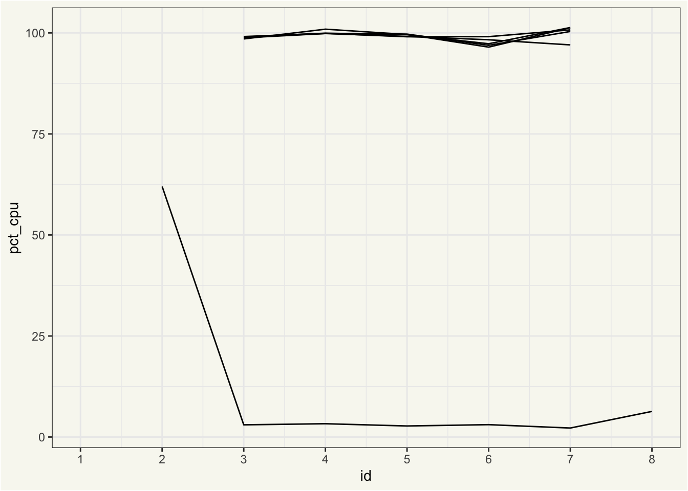

I’ve found that the following pattern looms large in content about parallel processing with R (including my own):
- Run some code sequentially
- Run the same code in parallel
- Compare the execution times
- Hypothesize on what’s behind the differences in those times
To help myself ask better questions about parallelism and its effect on usage of system resources, I wanted a tool that could help me collect data beyond execution times. There are many good tools for profiling memory usage and execution time for sequential (as in “normal,” single-threaded, not parallelized) R code—such as Rprofmem(), the profmem package, the bench package, and packages in the R-prof GitHub organization—but extending those tools to the parallel context is a hard, hard problem.
I’m excited to share the initial release of syrup, an R package providing measures of memory and CPU usage for parallel R code. Rather than logging allocations and garbage collections, syrup measures usage of system resources by regularly pinging the system command ps and logging its results for all running R sessions. While the measurements that syrup can take are rather coarse in comparison to available tools for profiling sequential R code, I’ve found that they provide enough data to help me argue hypotheses that I was unable to support with data before.
You can install the package with the following code:
install.packages("syrup")In this blog post, I’ll give a brief example of what it does and then share briefly about how it works.
What does it do?
The syrup package provides one function, syrup(). Supplied an expression, the function will return snapshots of memory and CPU usage captured while the expression evaluates. For example:
syrup(Sys.sleep(2))# A tibble: 8 × 8
id time pid ppid name pct_cpu rss vms
<dbl> <dttm> <int> <int> <chr> <dbl> <bch:byt> <bch:b>
1 1 2024-07-15 08:47:07 23227 23168 R NA 146MB 392GB
2 1 2024-07-15 08:47:07 22648 21210 rsession-arm64 NA 176MB 393GB
3 2 2024-07-15 08:47:08 23227 23168 R 0 146MB 392GB
4 2 2024-07-15 08:47:08 22648 21210 rsession-arm64 0.988 176MB 393GB
5 3 2024-07-15 08:47:08 23227 23168 R 0 146MB 392GB
6 3 2024-07-15 08:47:08 22648 21210 rsession-arm64 0.864 176MB 393GB
7 4 2024-07-15 08:47:09 23227 23168 R 0.162 146MB 392GB
8 4 2024-07-15 08:47:09 22648 21210 rsession-arm64 0.824 176MB 393GBIn this tibble, id defines a specific time point at which process usage was snapshotted, and the remaining columns show output derived from ps::ps(). Notably, pid is the process ID, ppid is the process ID of the parent process, pct_cpu is the percent CPU usage, and rss is the resident set size (a measure of memory usage).
For a more interesting demo, we’ll tune a regularized linear model using cross-validation with tidymodels. First, loading needed packages:
Using future to define our parallelism strategy, we’ll set plan(multicore, workers = 5), indicating that we’d like to distribute computations across 5 cores using forking. By default, future disables forking from RStudio; I know that, in the context of building this README, this usage of forking is safe, so I’ll temporarily override that default with parallelly.fork.enable.
local_options(parallelly.fork.enable = TRUE)
plan(multicore, workers = 5)Now, simulating some data:
set.seed(1)
dat <- sim_regression(1000000)
dat# A tibble: 1,000,000 × 21
outcome predictor_01 predictor_02 predictor_03 predictor_04 predictor_05
<dbl> <dbl> <dbl> <dbl> <dbl> <dbl>
1 3.63 -1.88 0.872 -0.799 -0.0379 2.68
2 41.6 0.551 -2.47 2.37 3.90 5.18
3 -6.99 -2.51 -3.15 2.61 2.13 3.08
4 33.2 4.79 1.86 -2.37 4.27 -3.59
5 34.3 0.989 -0.315 3.08 2.56 -5.91
6 26.7 -2.46 -0.459 1.75 -5.24 5.04
7 21.4 1.46 -0.674 -0.894 -3.91 -3.38
8 21.7 2.21 1.28 -1.05 -0.561 2.99
9 -8.84 1.73 0.0725 0.0976 5.40 4.30
10 24.5 -0.916 -0.223 -0.561 -4.12 0.0508
# ℹ 999,990 more rows
# ℹ 15 more variables: predictor_06 <dbl>, predictor_07 <dbl>,
# predictor_08 <dbl>, predictor_09 <dbl>, predictor_10 <dbl>,
# predictor_11 <dbl>, predictor_12 <dbl>, predictor_13 <dbl>,
# predictor_14 <dbl>, predictor_15 <dbl>, predictor_16 <dbl>,
# predictor_17 <dbl>, predictor_18 <dbl>, predictor_19 <dbl>,
# predictor_20 <dbl>We’ve got a million observations from a simulated regression problem, where 20 predictors are available to predict the value of outcome.
The call to tune_grid() does some setup sequentially before sending data off to the five child processes to actually carry out the model fitting. After models are fitted, data is sent back to the parent process to be combined. To better understand system resource usage throughout that process, we wrap the call in syrup():
res_mem <- syrup({
res <-
# perform a grid search, where we...
tune_grid(
# vary the amount of regularization in a linear regression, and...
linear_reg(engine = "glmnet", penalty = tune()),
# use all predictors to model the outcome, ...
outcome ~ .,
# cross-validating the training data with (default) 10 folds.
vfold_cv(dat)
)
})
res_mem# A tibble: 46 × 8
id time pid ppid name pct_cpu rss vms
<dbl> <dttm> <int> <int> <chr> <dbl> <bch:byt> <bch:>
1 1 2024-07-15 08:47:12 23227 23168 R NA 1.2GB 393GB
2 1 2024-07-15 08:47:12 22648 21210 rsession-arm64 NA 175.95MB 393GB
3 2 2024-07-15 08:47:13 23252 23227 R NA 543.59MB 393GB
4 2 2024-07-15 08:47:13 23251 23227 R NA 556.78MB 393GB
5 2 2024-07-15 08:47:13 23250 23227 R NA 563.22MB 393GB
6 2 2024-07-15 08:47:13 23249 23227 R NA 565.36MB 393GB
7 2 2024-07-15 08:47:13 23248 23227 R NA 596.19MB 393GB
8 2 2024-07-15 08:47:13 23227 23168 R 62.0 1.25GB 393GB
9 2 2024-07-15 08:47:13 22648 21210 rsession-arm64 0.399 175.95MB 393GB
10 3 2024-07-15 08:47:14 23252 23227 R 98.5 744.69MB 393GB
# ℹ 36 more rowsThese results are a bit more interesting than the sequential results from Sys.sleep(2). Look closely at the ppids for each id; after a snapshot or two, you’ll see five identical ppids for each id, and those ppids match up with the remaining pid in the one remaining R process. This shows us that we’ve indeed distributed computations using forking in that one remaining R process, the “parent,” has spawned off five child processes from itself.
We can plot the result to get a better sense of how memory usage of these processes changes over time:
# retrieve the current process ID, which will be the parent
# ID for the workers
worker_ppid <- ps::ps_pid()
res_mem %>%
# keep only the parent process and its workers
filter(ppid == worker_ppid | pid == worker_ppid) %>%
ggplot() +
aes(x = id, y = rss, group = pid) +
geom_line() +
scale_x_continuous(breaks = 1:max(res_mem$id))At first, only the parent process has non-NA rss, as tidymodels hasn’t sent data off to any workers yet. Then, each of the 5 workers receives data from tidymodels and begins fitting models. Eventually, each of those workers returns their results to the parent process, and their rss is once again NA. The parent process wraps up its computations before completing evaluation of the expression, at which point syrup() returns. (Keep in mind: memory is weird. In the above plot, the total memory allotted to the parent session and its five workers at each ID is not simply the sum of those rss values, as memory is shared among them.) We see another side of the story come together for CPU usage:
res_mem %>%
filter(ppid == worker_ppid | pid == worker_ppid) %>%
ggplot() +
aes(x = id, y = pct_cpu, group = pid) +
geom_line() +
scale_x_continuous(breaks = 1:max(res_mem$id))
The percent CPU usage will always be NA the first time a process ID is seen, as the usage calculation is based on change since the previous recorded value. As soon as we’re able to start measuring, we see the workers at 100% usage, while the parent process is largely idle once it has sent data off to workers.
How does it work?
Loosely, the function works like this:
-
syrup()captures the supplied expression (and doesn’t yet evaluate it). - The function then spins up another R session—call it
sesh—that snapshots memory and CPU usage information for all running R processes at a regular interval. - In the original R session,
syrup()evaluates the supplied expression. While it’s doing so,seshis running in the background tracking its usage of system resources. - Once the expression is finished evaluating, the original R session tells
seshto return all of the information it’s queried and then closessesh. - Finally,
syrup()returns the memory and CPU usage information.
Those “snapshots” are calls to ps::ps(), whose output looks something like this:
ps::ps()# A data frame: 613 × 11
pid ppid name username status user system rss vms
* <int> <int> <chr> <chr> <chr> <dbl> <dbl> <dbl> <dbl>
1 23257 21210 license-manager simoncou… <NA> NA NA NA NA
2 23256 NA <NA> <NA> <NA> NA NA NA NA
3 23227 23168 R simoncou… runni… 3.47 0.546 1.40e9 4.22e11
4 23225 1 mdworker_shared simoncou… runni… 0.0657 0.0266 2.72e7 4.20e11
5 23222 1 mdworker_shared simoncou… runni… 0.0636 0.0223 2.74e7 4.20e11
6 23220 1 mdworker_shared simoncou… runni… 0.0409 0.0116 1.15e7 4.20e11
7 23219 1 mdworker_shared simoncou… runni… 0.0436 0.0131 1.15e7 4.20e11
8 23217 1 mdworker_shared simoncou… runni… 0.0370 0.0111 1.16e7 4.20e11
9 23210 1 mdworker_shared simoncou… runni… 0.0299 0.0145 2.21e7 4.20e11
10 23208 1 mdworker_shared simoncou… runni… 0.0421 0.0148 2.19e7 4.20e11
# ℹ 603 more rows
# ℹ 2 more variables: created <dttm>, ps_handle <I<list>>ps::ps() returns information on all active processes. Under the hood, syrup() does a filter() to extract only active R processes1 and does some mutate()s to calculate the percent CPU usage.
My graphic design skills are lame, but here’s an attempt at visualizing that process for the simple Sys.sleep() example:
syrup() in a simple case. The interval argument controls how often resource usage is snapshotted and defaults to half a second; I set it explicitly here just for demonstration.Again, the function output becomes a bit more interesting when code is executed in parallel. For that tuning process, it might look something like:
tune_grid() results in 5 workers spinning up to cross-validate models. Each call to ps::ps() will capture details on all running R sessions.Concluding
syrup is a pretty scrappy tool, both in terms of its implementation and the utility of its output. At the same time, I think its existence is a testament to the power of the R package ecosystem–syrup is able to traverse quite a bit of complexity in only a couple hundred lines of source code thanks to a few (relatively heavy) dependencies. The callr and ps packages do a lot of heavy lifting for interfacing with multiple R processes at once2, and I took on tidyverse dependencies liberally to speed up the development process while ensuring safety.
While the kinds of measurements that syrup can provide are pretty coarse in comparison to what’s available for sequential R code, they provide more data points with which to test hypotheses about how parallel R code interfaces with system processes and consumes computational resources. I’ve found the package to be a helpful tool in better understanding tidymodels’ support for parallelism, and I hope others find it useful in their own work.